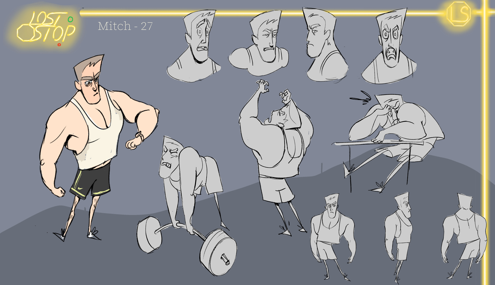
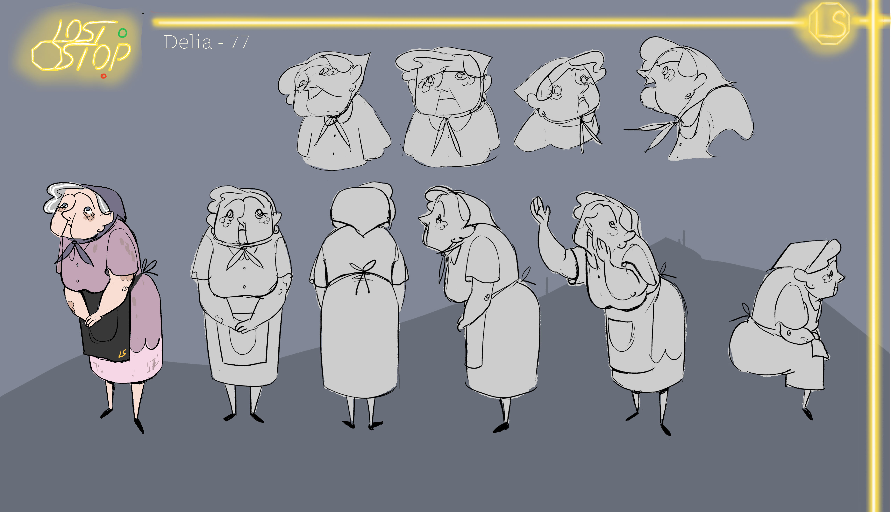
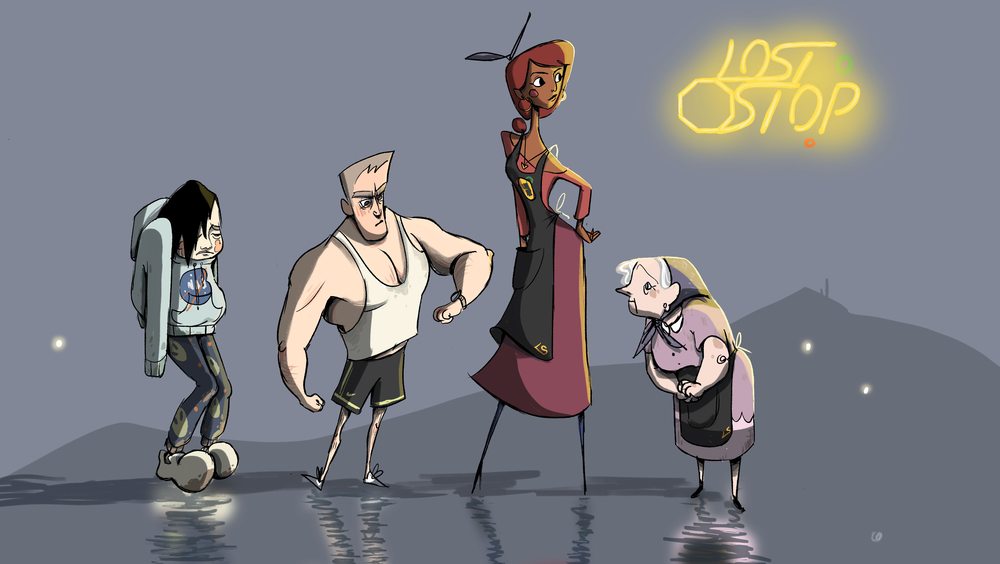
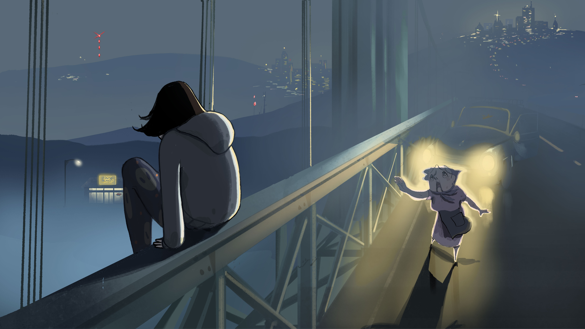
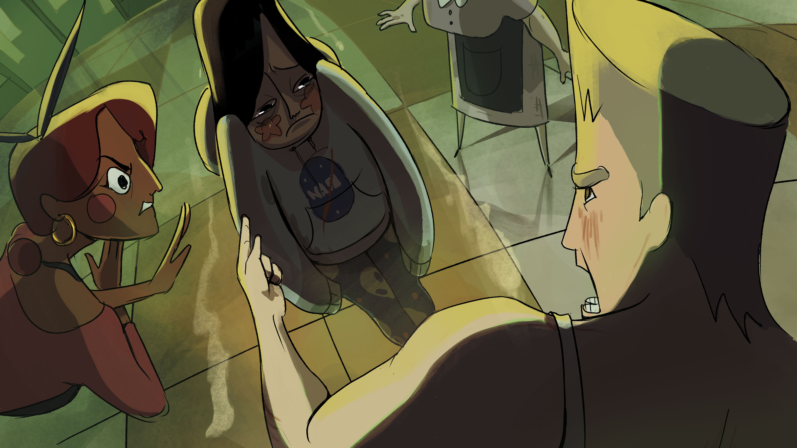
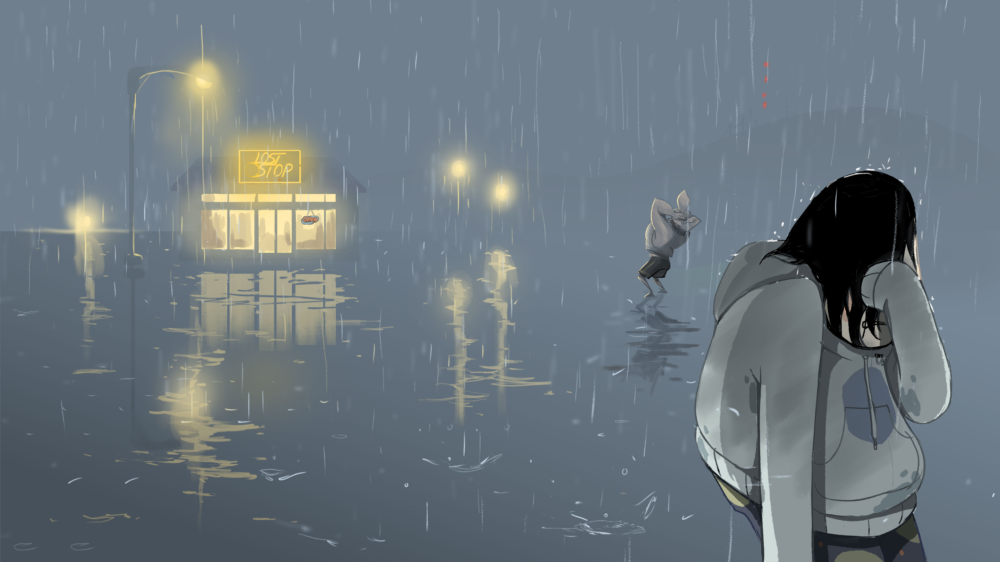
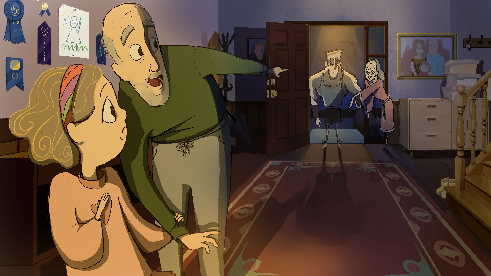
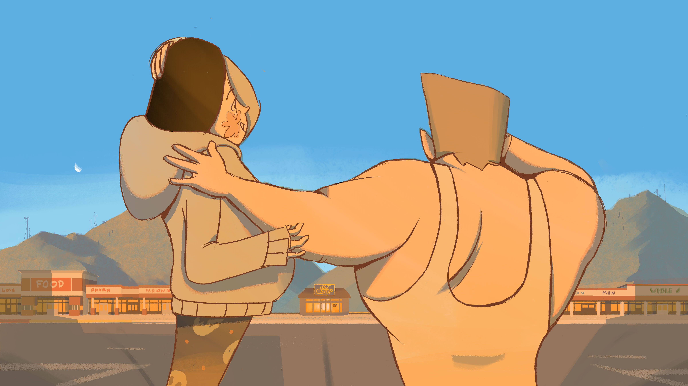

"The Lost Stop" was made for my Calarts application portfolio in 2024-2025. It's about
a convenience store called The Lost Stop that only appears for those who are lost. It explores themes of
mental health, toxic masculinity, and forgiveness.
A rough comic introducing the overall concept of the story.
Characters
Jackie(17) is a high schooler that struggles with depression. The pressure of his
failing grades, lack of friends, and worst of all, his parents' apathy, push him
to suicidal ideation. His story is about acceptance and healing.

Mitch(29) prides himself in his hard work that earned him enough money to pull
himself and his family out of poverty. However in the hustle of managing his business,
he neglects other important personal commitments, such as his relationship with his
little sister. His story is about rebuilding those connections.

Delia(77) is The Lost Stop's longest resident. Since her son died 18 years ago,
she has had no friends or family left, subjecting her to an accute loneliness.
She finds purpose in The Lost Stop. Ava(28) found The Lost Stop after an emotionally abusive boyfriend left her
isolated and without support. She finds support through Delia, and together, they
manage the convenience store.

Keyframes

The story starts with Jackie on a bridge, about to end his life.
Right as he is about to jump, he sees the lights of a convenience store
in the background: The Lost Stop. Delia emerges, stops him, and brings him
into the store.

In the store, Mitch is already angry because he finds he is unable to escape
the place. Then he listens to Jackie's story and begins to chastise him for being
ungrateful, spoiled, and weak. The opposition between Jackie and Mitch's characters
are revealed. How will they solve this dispute?

Jackie runs out of the store, as does Mitch. They both find that they are
unable to escape. The fog is so thick nothing else can be seen but the lights
of the convenience store.

As the story progresses, Mitch visits his family for the first time
in 7 years. He finds that his little sister doesn't remember him and is afraid
of his presence because he has been gone for so long. This is a turning point for Mitch.Mitch and Jackie have a conversation about their families.
They both end up in a state of understanding for each other.
Mitch realizes Jackie can make paper cranes, something
Mitch was never able to do. They realize they can learn something from each other.

The story ends with Mitch and Jackie seeing The Lost Stop, not isolated
and surrounded by fog, but nestled among several other stores in a busy
plaza. They realize they now have the choice to leave the convenience store,
because they are no longer lost.